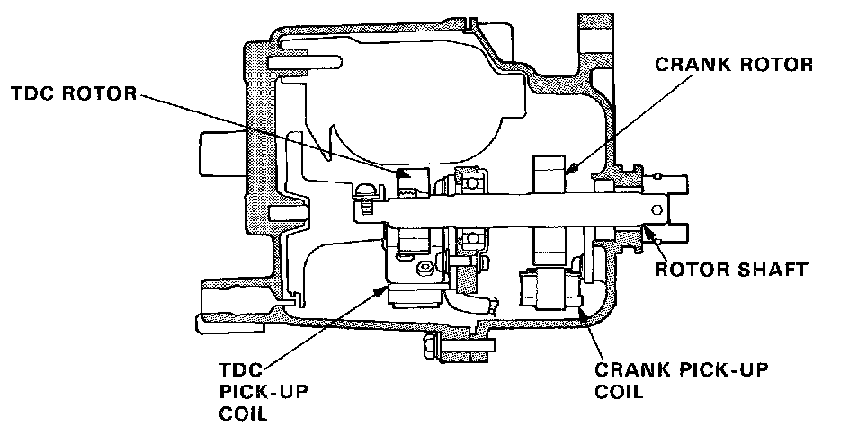

DTC 8

The CRANK sensor determines timing for fuel injection and ignition of each cylinder and also detects engine RPM. The TDC sensor determines ignition timing at start-up (cranking) and when crank angle signal is abnormal.
TROUBLESHOOTING FLOWCHART